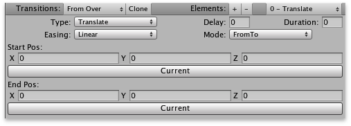
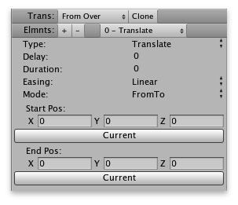

Transitions
Overview Transitions are lists of one or more various types of animated effects to apply to an object. Use them to visually transition an object from one state to another. Various object types (such as controls and panels) support transitions. Transitions can be edited using either an editor, or an inspector interface (Unity desktop only).

Transition editor

Transition inspector (Unity desktop only) |
Using Transitions
Select a Transition To setup a transition, first you must select which transition you would like to setup. This can be done using the "Transitions" popup list. The "Clone" button next to this popup allows you to copy all settings from the currently selected transition to all other transitions in the popup list. After which, any changes you make to the current transition will be automatically reflected in the other transitions. This will continue to be the case until you make a change to one of the other transitions directly, at which point that other transition will no longer automatically pick up the settings of the first.
|
Control Transitions
Controls, such as Buttons, allow you to setup multiple transitions per control state. For example, the "Over" state of the Button control allows you to setup a different state when transitioning from the "Normal" state versus the "Active" state. This means you can have one thing occur when coming from one state, and a different thing when coming from another. The currently selected state is always the state being transitioned to, and each transition should begin with "From..." to indicate the state from which it will transition.
|
Panel Transitions
UIPanels, and all UIPanelBase-derived panel classes include at least 4 base transition types:
When using panels with a UIPanelManager, you can use these transitions to create a smooth-flowing menu or wizard. When moving "forward" in the menu/wizard, the "forward" transitions are used, and when moving backward, the "back" transitions are used. When using panels apart from a manager, most controls, etc, which interface with panels will use the "forward" transitions by default, so these are the ones you should setup in such a case. Aside from this, you can always initiate these transitions directly from code. Block Input The 4 base transitions listed above also have a special "Block Input" selection that appears next to the "Clone" button in the transition editor area. When enabled, this setting causes the UIManager to not process input while the transition is taking place. This is useful to avoid the user accidentally clicking on buttons, etc, as they travel across the screen while a panel is being dismissed/brought in. Input will be re-enabled immediately upon completion of the transition. Some other panel types, such as UIInteractivePanel, include additional transitions for when the panel enters a given state based upon input. This is very similar to how transitions work for controls. |